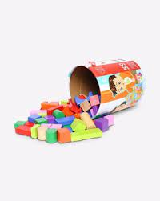

LEGO plans to find replacement material for bricks by 2030
In an effort to be more environmentally responsible, LEGO have said they aim to stop manufacturing bricks made of plastic resin and are considering other options, which could include hemp. According to Telegraph World, the company makes 60 billion blocks a year. While LEGO want to replace the harmful plastic used in their products, they also require the new material to meet the high standards that allow the blocks to work as they always have, especially with the effective “clicking” together is a key aspect of the iconic coloured block.
Global Warming harms the environment

The perceived scale of the Amazon blazes received global attention this summer. However, international concerns raised at the time were countered by the Brazilian Government, which claimed the fire situation in August was 'normal' and 'below the historical average'.An international team of scientists writing in the journal Global Change Biology say the number of active fires in August was actually three times higher than in 2018 and the highest number since 2010.